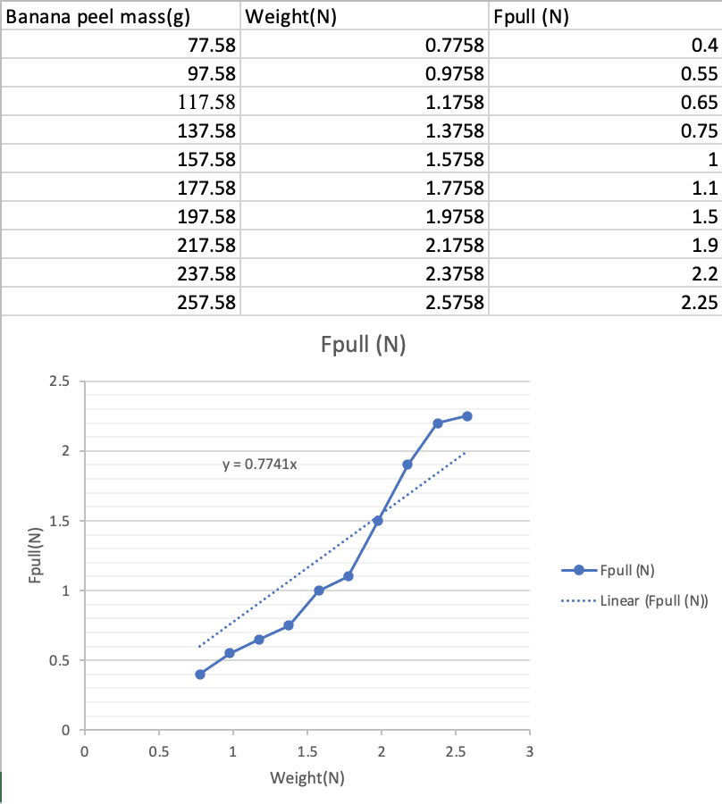
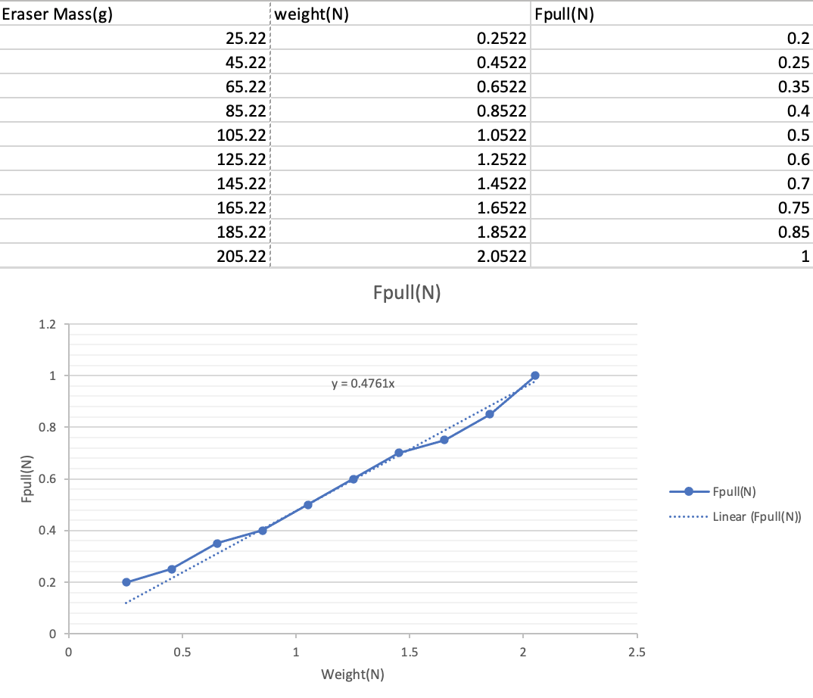
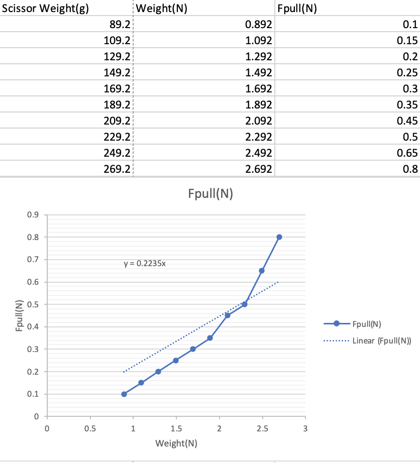

Galileo, Victoria, Alyona, Jackson
12-3-24
(graphics are a work in progress)
In this lab we calculated the angle, distance, and most importantly coefficient of kinetic friction of a slide, in order to learn about how to calculate friction and practice our other analysis skills. We tested the kinetic frictional force of the slide by sliding Gali down. My hypothesis was that the coefficient of friction would be about 0.4.
The equation we used to find the coefficient of fricion was 𝚺F=ma=∅N=Fpull-Ffr or Fpull = Ffr = uk(mg)
After frictioning some bananas we found the following results using the spring weight and electronic balance. The slope of the graph Y is equal to Fpull/Fweight is equal to uk. The slope of each graph is the coefficient of friction of the object.
  As expected, a higher weight meant a higher pulling force, but the ratios remained somewhat consistently the same, with the items having the following coefficients of friction. Eraser: 0.48, Scissor: 0.22, Banana: 0.77
Possible errors include our method of measuring Fpull, which was flawed because we were unable to pull the object at a constant velocity, nor measure very precisely the reading of our spring scale. We could fix this in so many different ways, but the goal would be a more precise scale or method of pulling at a constant velocity. There is also some merit to doing more measurements.
In conclusion, the bananas were actually the object with the highest coefficient of kinetic friction out of all of the objects, going against my hypothesis that it would be the middle one. Our data may not be perfect, but the difference was definetely noticeable between each object, with the banana peel being the most frictitious as opposed to the what cartoons tell us that it should be the least. The real world applications of being able to measure coefficient of friction has uses like tires, clothing technology, sports.